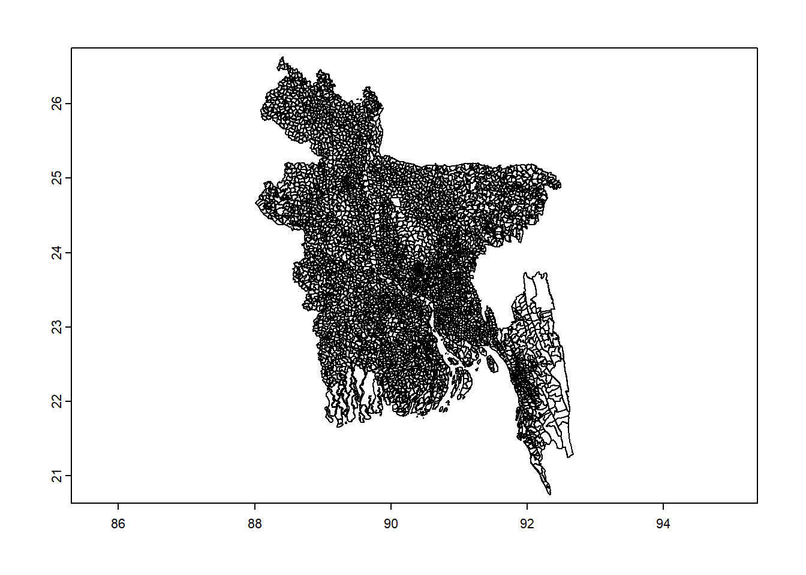

Download salinity data available from Hassani et al. (2020).
root <- "D:/Data/HERplus/"
options(timeout=36000)
getSalinity <- function(url, path){
temp <- tempfile()
download.file(url,temp ,mode = "wb")
unzip(temp, exdir = path)
}
if(!file.exists(paste0(root, "Salinity/"))){
getSalinity("https://figshare.com/ndownloader/files/25617323", root)
getSalinity("https://figshare.com/ndownloader/files/25616990", root)
getSalinity("https://figshare.com/ndownloader/files/25617050", root)
getSalinity("https://figshare.com/ndownloader/files/25617098", root)
}Get Bangladesh level 4 administrative boundaries.
library(raster)
temp <- getData("GADM",country="Bangladesh",level=4)
plot(temp)
Extract spatial salinity metrics by aggregating salinity in a given year in each admin 4 boundary.
filename <- paste0(root,"Salinity/Bangladesh_spatial_temporal_salinity.csv")
library(terra)
shp <- vect(temp)
if(!file.exists(filename)){
files <- list.files(paste0(root,"Salinity/"),pattern = (".tif$"), recursive = TRUE, full.names = TRUE)
knitr::kable(head(files), caption = 'Salinity raster files')
df <- data.frame(NAME_4=shp$NAME_4)
for(i in 1:length(files)){
temp <- extract(rast(files[i]), shp, fun=mean, na.rm=TRUE, ID=F)
df <- cbind(df, temp)
}
colnames(df)[-1] <- gsub("ECe_","",names(df)[-1])
write.csv(df, filename)
} library(chirps)
dates <- c("2013-5-16","2013-5-20")
#lonlat <- data.frame(lon = c(shp@bbox[1,1],shp@bbox[1,2]), #lat = c(shp@bbox[2,1], shp@bbox[2,2]))
data <- get_chirps(shp, dates, server = "CHC", as.raster = TRUE)
data## class : SpatRaster
## dimensions : 118, 93, 5 (nrow, ncol, nlyr)
## resolution : 0.05, 0.05 (x, y)
## extent : 88, 92.65, 20.75, 26.65 (xmin, xmax, ymin, ymax)
## coord. ref. : lon/lat WGS 84 (EPSG:4326)
## source(s) : memory
## names : chirps~.05.16, chirps~.05.17, chirps~.05.18, chirps~.05.19, chirps~.05.20
## min values : -9999.0000, -9999.00000, -9999.00000, -9999.0000, -9999.00000
## max values : 169.5837, 98.93618, 93.42157, 109.3714, 92.85061dff <- extract(data[["chirps-v2.0.2013.05.16"]], shp, fun =mean, na.rm=T, bind=T)
write.csv(dff, paste0(root,"Chirps/Bangladesh_chirps_rainfall.csv"))Hassani, Amirhossein; Azapagic, Adisa; Shokri, Nima (2020): Predicting Long-term Dynamics of Soil Salinity and Sodicity on a Global Scale. figshare. Dataset.